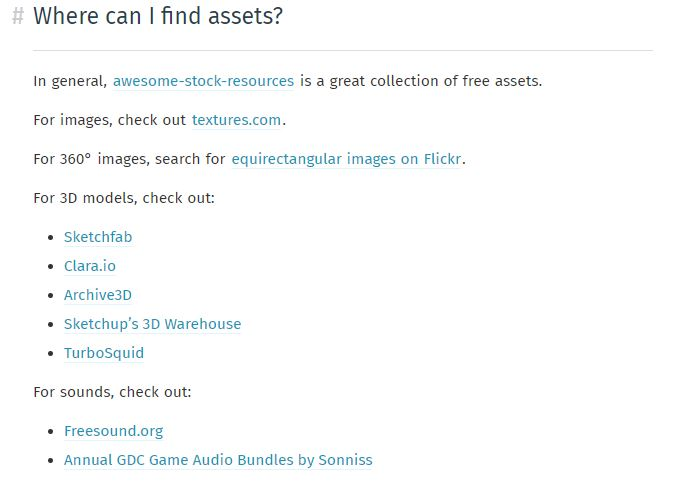
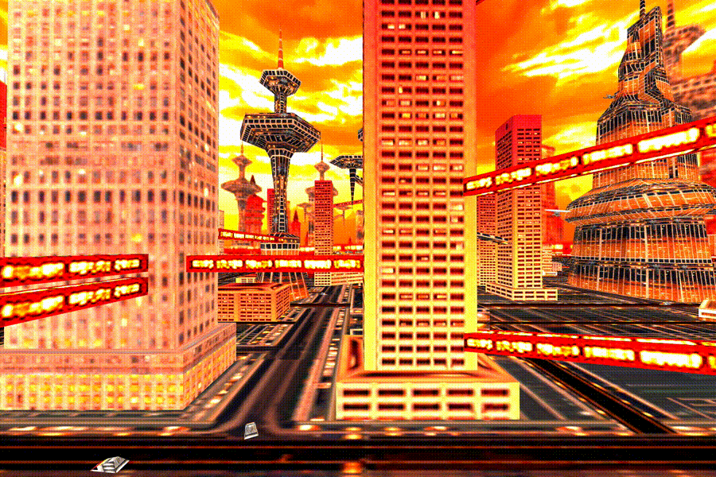
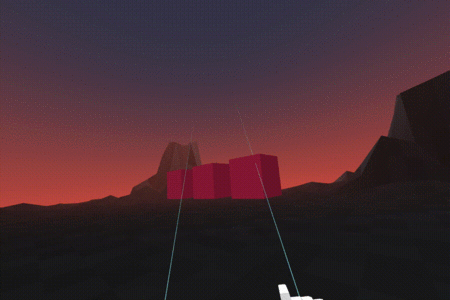

WebVR
Introducción a la realidad virtual con A-Frame
presentado por David Blanchard / @daviddagbx
Realidad virtual


Introducción
Glitch es una comunidad amigable donde construirás la aplicación de tus sueños,
Con aplicaciones de ejemplo de trabajo para hacer remix, un editor de código para modificarlas, alojamiento y despliegue instantáneos: cualquiera puede construir una aplicación web en Glitch, de forma gratuita.
Glitch
- Glitch te permite codificar en el navegador sin tener que configurar nada
- Glitch le permite remezclar proyectos para utilizar los proyectos A-Frame existentes como punto de partida
- Glitch publica instantáneamente y aloja su sitio con una URL (p. Ej., https://demo-blanchard-web-vr.glitch.me/)
Glitch
- Glitch actualiza su sitio A-Frame en vivo en cada cambio de código
- Glitch permite que varias personas codifiquen en el mismo proyecto
Remix a un proyecto existente
Remix a un proyecto existente
Glitch le permite remezclar o bifurcar un proyecto existente y usarlo como base para su nuevo proyecto. Antes de comenzar, se recomienda vincular Glitch a una cuenta de GitHub. Después de que hagas remix, Glitch te dará un azar nombre de proyecto y URL, que puede cambiar.
Editando el codigo

Una vez que hayas remezclado el A-Frame Starter Glitch, mira dónde editarás tu código. Dale un vistazo y verás que incluso puedes editar el código del servidor, cargar activos, crear archivos nuevos o invitar a otros a editar contigo..
Inspeccionando el proyecto

Después de examinar el editor, vea el proyecto en vivo.
Exportando el proyecto

En cualquier momento, si desea descargar su proyecto o exportarlo a GitHub, puede hacerlo desde el menú Opciones avanzadas. La descarga le dará un archivo .tgz que puede descomprimir. Para los proyectos A-Frame, a lo importante está en la carpeta public /
A-Frame
Un framework web para construir experiencias en realidad virtual
Probando los ejemplos de A-Frame

Juega con los ejemplos en tu pc o en tu smartphone desde la página de A-Frame, el blog de A-Frame, o el sitio awesome-aframe. tambien puedes consultar webvr.rocks para mas información sobre webvr y los dispositivos compatibles
Iniciar con elhola mundo en, WebVR
A-Frame proporciona elementos HTML fáciles de usar para principiantes llamados primitivas.Podemos modificar las mallas básicas mediante atributos HTML (por ejemplo, cambiar colores, posiciones, rotaciones, escala).
Iniciar con elhola mundo en, WebVR — Position
La posición define dónde se encuentran los objetos en el espacio tridimensional (X, Y, Z). Cambie la posición de los objetos a través de los valores de atributo HTML
position. Positions.
Position, AFrame
Rotation, AFrame
La rotación define la orientación de los objetos en el espacio 3D (sobre los ejes X, Y, Z) en grados. Use the right-hand rule to spatially visualize rotation. Leer sobre rotations.
Rotation, AFrame
Agregar Primitivas
Para agregar primitivas a la escena utilizamos el elemento HTML
<a-scene>. Leer sobre primitivas.
Agregar Primitivas
Agregar Texturas — Subiendo los Assets
Vamos a agregar texturas de imagen a las modelos para obtener una mejor apariencia que un color plano. Encuentra imágenes online, y subelas a través de la sección de assets en Glitch o a también con utilizando cdn.aframe.io. En cualquier otro lugar que cargue, asegúrese de que se esté publicando con CORS y sobre HTTPS.
Agregar Texturas — Donde encontrar assets
Agregar Texturas — Subiendo los Assets

En el Glitch debajo de ↓, algunos assets ya se proporcionarán.
Agregar Texturas — Image Textures
Llene el atributo
srccon la url de la imágen. Leer acerca.
Agregar Texturas — Image Textures
Abrir el inspector de A-Frame
Presiona
<ctrl> + <alt> + ien cualquier escena de A-Frame para abrir el editor visual, similar a las herramientas de desarrollo de su navegador! Prueba con el inspector en algunos de los ejemplos. Leer sobre el Inspector.
Abrir el inspector de A-Frame
Abra el Inspector de AFrame - Cambie los valores de los componentes
Modifique una entidad ajustando sus componentes en el panel derecho. El Inspector conoce todos los componentes A-Frame, incluidos los componentes de la comunidad. Este ejemplo incluye un componente externo de
text-geometry, que el inspector puede modificar los valores.
Abra el Inspector de AFrame - Cambie los valores de los componentes

Abrir el Inspector de A-Frame: adjuntar componentes del registro
Usa physics components del Registro para agregar gravedad y colisiones. El Registro es una colección curada de componentes A-Frame. Y el Inspector está conectado al Registro para que podamos agregar componentes del Registro en el panel de entidades.
Abrir el Inspector de A-Frame: adjunte componentes del registro
Entidad-Componente
Detrás de los elementos primitivos fáciles de usar,
A-Frame se basa en una arquitectura componente - entidad.
Descomponga los elementos primitivos en el ejemplo de Hello, WebVR a<a-entity>s con sus componentes fundamentales.
Entidad-Componente
- Convertir
<a-box>a<a-entity>con el componente geometry y material component. Configura la geometria del componente para ser de tipoprimitive: box - Convert
<a-sphere>to<a-entity>with geometry component and material component. Configure the geometry component to beprimitive: sphere - Convert
<a-cylinder>to<a-entity>with geometry component and material component. Configure the geometry component to beprimitive: cylinder - Convert
<a-plane>to<a-entity>with geometry component and material component. Configure the geometry component to beprimitive: plane - Convert
<a-sky>to<a-entity>with geometry component and material component. Configure the geometry component to beprimitive: spherewith a largeradius: 3000, and configure the material component to beshader: flatso we don't do expensive lighting calculations when we just need a flat color
ENTIDAD-COMPONENTE - AÑADIR UNA ESFERA DE FUENTE DE LUZ
Use el patrón entidad-componente para agregar una esfera que también actúe como una fuente de luz puntual. Mezcle la geometría, el material y los componentes de luz para componer este tipo de objeto.
ENTIDAD-COMPONENTE - AÑADIR UNA ESFERA DE FUENTE DE LUZ
- Busque la entidad con Id
<a-entity id="lightSphere"> - Adjunte el componente geometry configurado para usar la
primitiva: spherea la entidad - Adjunte el componente material configurado para usar el
color: #FFFyshader: flata la entidad - Adjunte el componente light configurado para usar el
tipo: pointa la entidad - Extra: Agregar el componente animacion del Registro via a
<script>tag. Adjunte la animacion configurada para usar lapropiedad: positionydir: alternateandloop: truey provea un valor de posicion para el elemento<POSITION>
ENTIDAD-COMPONENTE - AÑADIR UNA ESFERA DE FUENTE DE LUZ

El registro
El registro es un excelente lugar para obtener componentes geniales que la comunidad ha agregado a A-Frame. Algo así como complementos de terceros. Encuentre componentes de la comunidad en el Registro, copie sus enlaces JS, inclúyalos a través de una etiqueta
<script>y utilícelos directamente desde HTML.
Ampliar Endiad-Componente — Desde el registro
- Inlcuir Sistema de particulas. Adjuntar la entidad
<a-entity>con el componenteparticle-systemconfigurado enpreset: defaultypreset: snow.vAbrir el inspector para jugar con los valores - Incluir Animation.
Adjunte animación a la esfera para ajustar su escala configurando el componente de animación con la
propiedad: scale,loop: true, andto: 1.1 1.1 1.1 - Incluir Outline Effect.
Suelte el
<script>y adjunte el componente deoutlinea la escena
Ampliar Endiad-Componente — Desde el registro
Usando JavaScript
Use JavaScript y DOM APIs para modificar programáticamente la escena y sus entidades. A-Frame no es solo HTML; A-Frame proporciona acceso a JavaScript, DOM APIs y three.js debajo para un control total. Lea acerca del uso de JavaScript y DOM APIs con A-Frame.
Usando JavaScript
Para ver los registros de JavaScript, podemos abrir la consola de desarrollo del navegador haciendo clic derecho en la página, haciendo clic en Inspeccionar o Inspeccionar elemento y luego haciendo clic en la pestaña Consola. Al ver soluciones, podemos ver los resultados a través de la consola del navegador.
Usando JavaScript — Obtener Entidades
Se utiliza
document.querySelector()ydocument.querySelectorAll()para obtener la referencia a la escena y sus entidades. Lea sobre consultas para entidades.
Usando JavaScript — Modificar Entidades
Se utiliza
Entity.setAttribute()para modificar entidades después de recuperarlas del ejemplo anterior. Lee sobre modificar entidades.
Usando JavaScript — Crear Entidades
Se puede utilizar
document.createElement()para crear entidades,.setAttribute()para configurarlas y.appendChild()para agregarlas a la escena. Para saber más sobre Entidades
Usando JavaScript — Manejar Eventos
Utilice
.addEventListener()para registrar una función de controlador que se invocará cuando se emita un evento. Luego, emita ese evento manualmente para ver que la función del manejador se ejecute. Más tarde podemos usar los oyentes de eventos para cambiar la escena en función de la entrada del usuario u otros eventos. Conocer mas sobre eventos y manejadores de eventos con A-Frame.
Interacciones del cursor basado en la mirada
Agregar la entidad Cursor
Use el componente de
cursorcomponent basado en la mirada para proporcionar la capacidad de interactuar con entidades (principalmente para teléfonos inteligentes). Lea acerca de cómo construir una galería de imágenes de 360 °.
Interacciones del cursor basado en la mirada — Agregar la entidad Cursor
Esta lección tiene todos los oyentes del evento ya conectados. Solo necesitamos agregar una entidad con el componente del cursor que proporcionará esos eventos en función de la entrada del usuario. Tenga en cuenta que estos eventos no son proporcionados por el navegador, sino a través de A-Frame.
Interacciones del cursor basado en la mirada — Agregar la entidad Cursor
- Agregue la entidad
<a-camera>. Anteriormente, A-Frame proporcionaba una cámara predeterminada. - Agregue la entidad
<a-cursor>como hijo debajo de la entidad de la cámara - Arrastre la cámara alrededor del clic en los paneles del escritorio. En los teléfonos inteligentes, mire los paneles para activar clics (es decir, basado en la mirada)
Interacciones del cursor basado en la mirada — Agregar la entidad Cursor

Interacciones del cursor basado en la mirada - Manejar eventos
Utilice los eventos
click,mouseenter,mouseleaveprovistos por el componente decursorde mirada para cambiar las propiedades de un objeto.
Interacciones del cursor basado en la mirada - Manejar eventos
El código de Glitch tiene configurada la estructura del proyecto. Podemos agregar código JavaScript dentro del componente de eventos de identificador, marcado por los comentarios de código.
Interacciones del cursor basado en la mirada - Manejar eventos
-
Adjuntar nuestro
controller-event-handlera los cubos. Podemos adjuntar a todos ellos a la vez a través de la mezcla. -
Agregue un detector de eventos para cambiar el color del cuadro en el evento
mouseenter -
Agregue un detector de eventos para restaurar el color de la caja en un evento
mouseleave
Interacciones del cursor basado en la mirada - Manejar eventos

Agregar Modelos 3D — glTF Model
Los modelos 3D son como las imágenes de aplicaciones 3D y VR, aunque un poco más pesadas. Un modelo 3D se crea de antemano en un programa de modelado 3D como Blender y consta de vértices, texturas y materiales. Recomendamos utilizar glTF, un estándar de formato de archivo 3D relativamente nuevo adaptado para la Web. glTF es como el JPG de los modelos 3D.
Agregar Modelos 3D — glTF Model
- Agregue la url:
https://cdn.aframe.io/test-models/models/virtualcity/VC.gltfa el elemento '<a-asset-item id="cityModel">' en el atributosrcpara precargar el modelo. - Agregue
#cityModela el<a-gltf-model>atributosrcpara setear el model en pantalla.
Agregar Modelos 3D — glTF Model

Agregar Modelos 3D — glTF animaciones
Los modelos pueden venir con animaciones. El modelo proporcionado anteriormente tiene muchas animaciones de barcos que se desplazan por la ciudad. En la versión anterior de Glitch, proporcionamos un componente simple
play-all-model-animationsque podemos adjuntar a nuestro modelo para reproducir sus animaciones. Continua trabajando con el ejemplo anterior.
Agregar Modelos 3D — glTF animaciones
Agregar Modelos 3D — glTF animaciones
- Incluye el componente
animation-mixervia<script>en la parte del<head>despues del script de A-Frame. Este componente se encuentra en la pagina del Registro.https://unpkg.com/aframe-extras.animation-mixer@3.4.0/dist/aframe-extras.animation-mixer.js - Adjunta el componente
animation-mixera el model<a-gltf-model>seteandolo via atributo de HTML delanimation-mixer. Por defecto esto reproducirá todas las animaciones del model una por una.
Agregando tus propios modelos 3D
Si tienes un modelo propio, puede ser difícil cargarlo en un CDN, ya que consta de varios archivos que se refieren entre sí. Hasta ahora, la forma más sencilla que hemos encontrado es volcarlos en un repositorio de GitHub, publicar la rama maestra del repositorio en las páginas de GitHub y usar rawgit.com para servirlos. Alternativamente, configurar Amazon S3. Más por venir.
Añadir controles de Movimiento
Los controles manuales rastreados proporcionan inmersión e interactividad con los controladores manuales. En la siguiente falla, hemos pregrabado los movimientos del control de la mano y los botones presionando con A-Frame Motion Capture. Ahora solo tenemos que añadir las manos y manejar los eventos de interacción.
Añadir controles de Movimiento

Agregar interactividad a los controles de Movimiento
Hay muchos componentes para agregar interactividad a los controles manuales. controller-cursor, aabb-collider + grab, super-hands.
Agregar interactividad a los controles de Movimiento
Felicitaciones!
Con esto ya tienes los conocimientos básicos para entrar en el mundo de la realidad virtual con WebVR.

puedes referirte a la documentación para mas guias y volverte un experto